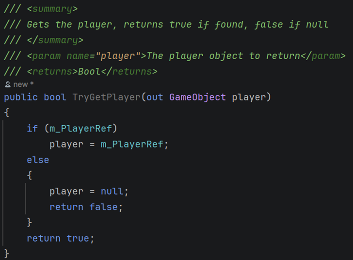

November 15, 2025Nov 15 comment_1103861 Solid Principles The single responsibility principle states that each class should be specific and should only be responsible for one section of the system. This makes classes more individual, self-reliant and decoupled so changes are easier and have less of a "domino effect". This can be followed easier by giving classes better names. Like instead of a script called "Game Manager" that only controls the creation and deletion of objects call it "Existence Manager" or "Spawn Manager". Personally I prefer existence to spawn, as spawn only implies it manages death whereas existence is more direct. This would then encourage collaborations to only use the class as specified, as opposed to putting unnecessary extra logic in their like scene loading or async operations, like one may put into a more vague and general "Game Manager". For the open closed principle, you should make classes open to extension but closed for modification. A good example of this would be that instead of having a huge class with many different functions to calculate collisions for different objects, you should instead have a small abstract class with a calculation function that individual objects can inherit and override to pass in their own unique values. This means adding new calculations should not affect existing ones, as they would be separate functions to inherit. Additionally, it would mean adding more objects would mean you don't have to change the original class, and add more calculations, you can just inherit from the original class and This can also be implemented in lots of code in general, just trying to make things more dynamic and extendible, not having arrays with set sizes and set for loops, instead they should be dynamic vectors or lists in for each loops, where possible and necessary. Just think about this when your hardcoding functions into For the Liskov substitution principle, children shouldn't be so different to the parent they can't be used interchangeably. For example, with pickups, a health pickup may be activated with a key like h and other pickups may be activated with a similar keypress like x or v. However, if a pickup is rarer or more powerful, you may want to activate it with a combination of keypresses like x + a + b or whatever. To fix this, you may think to extend the parent by adding combo keypresses as a member of the parent. However, this would then break to the single responsibility principle as the base class is now responsible for two types of pickup. To resolve both of these issues, you should instead make a separate parent called combo parent or use the same parent but have a combo interface which can be applied to select children of the pickup. Then you can have pickups which require a combination to use and are interchangeable with a simple parent, which has a single responsibility. The interface segregation principle states that interfaces should be specific and not general. Classes should not have to depend on interfaces they do not use. This follows the single responsibility principle. This makes the code more modular thus, more optimised, easier to debug and collaborate with. The dependency inversion principle reminds me of the KISS mnemonic - Keep it simple stupid. Don't have every object that can be interacted with have it's own implementation of interactivity; instead have them all depend on one interaction interface. The low level modules do not depend on high level modules, instead both depend on abstraction, not vise versa. This also follows the open-closed principle as it promotes extensibility and reusability as opposed to lots of individual low level implementations. Other Good Principles My own principle: Parent segregation. As opposed to having an enemy parent which every enemy in the game inherits from and includes things like being able to move, walk and take damage etc, you should instead have specific interfaces which break down this large parent into smaller more manageable classes. For example, a damageable interface could be applied to every enemy but it could also be applied to a wall. This means that a ice skeleton enemy could then just inherit from the skeleton parent, as opposed to inheriting from the enemy parent and then the skeleton parent, it inherits directly form the skeleton, meaning it only has access to the methods it will actually use. This is far better than the skeleton inheriting melee functionality from the enemy base class or a zombie inheriting ranged functionality, which wouldn't be used. This would also make classes clearer and easier to understand in collaboration. I think it would be especially great in a game with many different enemy types and subtypes or anLiskov Substitution principle, where a parent and child should be interchangeable, a massive parent isn't exactly interchangeable with a child who only uses half of its entire functionality. Dependency injection is also a good principle to follow. This means functions should take objects they need to reference as a parameter as opposed to trying to find the objects themselves, which is costly in performance and potentially risky as you might find null. For example, a HUD object which needs to reference the player for its health shouldn't try to find the player in the HUD creation function, but instead should have the player passed as an argument into the function. This would force the HUD creation function to be called from somewhere that has a reference to the player, like a game manager. This is good because the game manager can check if the player exists before the function is even called, even though it's good defensive programming to check if the player exists inside the function anyway, it is still more efficient than calling the function and then trying to find the player, potentially finding null and then checking if the player exists or is null. The HUD should be getting called in somet Design Patterns The Factory design pattern is about creating objects without specifying the exact class to simplify the instantiation process. For example, you may have a game manager which wants to spawn a ball. The game manager shouldn't need to know about the class of the ball it wants to spawn, instead it should be able to reference a public ball spawner with ball types stored as an Enum. This ball spawner may even inherit from a more general parent class or interface which defines the actual spawning logic, the ball spawner may just override some of these functions with more specific values like the prefab, type to spawn, spawn location, etc. This means the game manager can just go BallSpawner.Spawn(BallSpawner.RedBall) and the ball spawner would then spawn the ball using member variables storing the ball prefabs. The specific type of ball spawned could potentially even be checked/validated by checking if it implements a specific interface. The object pooling pattern is most useful for large sets of objects such as enemies or bullets. This involves initialising a "pool" of objects before they need to be used. This means objects can be activated and moved to the desired location, before being deactivated upon use, as opposed to instantiating new objects and destroying them every time they need to be used. This would have a large affect on performance, especially with larger quantities of objects being used quickly (such as bullets). Pre-allocating when the scene is loading or another situation where a loading screen may be needed is ideal because it won't interrupt gameplay and give random frame drops when it occurs. If the entire pre-allocated pool is used, a small margin of extra objects can be allocated on the fly, before eventually being deallocated again, after they are disused for a certain period of time. The Singleton pattern is great for manager classes. It is all about ensuring a class has only one instance, and providing global access to that single instance through a static property to limit duplicates. For example, an audio manager would generally be a Singleton because it would only ever need one instance. You wouldn't want three audio managers managing the same group of audio because then things would get confusing and messy. This is good for performance and consistency whilst maintaining behaviour across different scenes. Another example of a Singleton would be a player spawner. This should only ever have one instance as you wouldn't want two or three player spawners, potentially listening to the same events, like OnDeath, and then trying to spawn the player multiple times. The Command pattern is about using objects to queue tasks. This is good for controlling timing or playback. One example of playback would be being able to undo things. This can be done by using an undo and a redo stack. When a command is executed, it can be pushed onto the undo stack. When the undo command is executed, the stack is then accessed to revert the current command back to the one at the top of the stack. Any commands which are undone are popped off the undo stack and get pushed onto the redo stack to be used by the redo command in the same way. The State pattern allows you to execute commands based off the state the object is currently in. This can be particularly useful for AI because it can be put into a state machine. A state machine can then determine what state the AI is in by checking basic things like movement. For instance if the AI isn't moving, it can be put in the Idle state. Another command may be checking if the AI is in the Idle state too see if the AI should start regenerating health. If the AI is at full health it may go into the combat state, etcetera. This can also be good for player movement such as rolling and jumping since you may want to apply custom logic if the player is in the Begin-Roll/End-Roll, Rising, Apex and Falling states. The Observer pattern works like a radio station. One object broadcasts whilst other objects listen. Objects can listen for specific songs (or events). Once the specified event is heard actions can be performed. For example, a player might broadcast an OnDeath event when it dies. Many objects may be listening for this like the HUD (to know if it should be reset) the game manager (to know if the player needs respawning) and the respawn menu handler (to know if the respawn menu needs to be created). The MVP (Model, View, Presenter) pattern is like MVC (Model, View, Controller) in web development except it is more decoupled because in MVC the controller is always directly referencing the view and the model and view are tightly coupled, whereas in MVP the model and view are loosely coupled and only interact through the presenter, usually using interfaces. The view is essentially the same, just for handling button clicks and manipulating the visual elements and their layout, the model holds the logic backend and the presenter formats the data between the view and the model. The data can go both ways, model to view or view to model, either way the presenter is used as an intermediary. For instance, if a button is clicked, the View would handle the input before sending that data to the Presenter through an interface. The Presenter then executes any necessary presentation logic before getting the Model to run a function. After the function was executed and the Model's state changes (e.g., player health drops) The MVVM (Model, View, ViewModel) pattern is more advanced again. It uses a ViewModel instead of a Presenter, which is even more advanced, decoupled, and testable. The ViewModel is better than the Presenter because it relies on an event-based system (data binding), which is much better than the Presenter's manual approach of subscribing to Model events and calling View functions. The ViewModel uses this binding system, which means it means it does need an interface to communicate with the view, as its display properties are publicly exposed and automatically updated without any extra code; which is far more efficient in terms of development time and code maintenance. Crucially, while the View interface is gone, the ViewModel should still use interfaces to communicate with the Model to ensure full testability and adherence to SOLID principles. For ViewModel Testability, you test that the ViewModel's public properties and command logic are correct; you don't need to mock a View interface, which is generally cleaner and simpler. The View still exists for manipulating the UI and handling user input, and the Model still holds the backend data and performs the core game logic. Additionally, the ViewModel still has to perform the same essential formatting and calculation logic (presentation logic) as the Presenter. The Strategy pattern is a design pattern that lets you define a set of behaviours put each with into its own separate class, and make them interchangeable. This lets the client (player) object swap that behavior at runtime without changing its own code. A player might have a movement strategy which changes depending on the situation you're in. By default, you would use a walk strategy, if you get a power-up, you would switch the relevant powerup strategy (e.g., Fly), if you're in water, it might switch to a Swim strategy. This is more efficient than writing a giant if/else block inside the Player class, because instead, you can use a strategy interface which has one method (like move). You then create separate classes like: Walk, Fly, and Swim. Each one implements the main strategy interface. This means the player can have a variable like currentStrategy, which references the main strategy interface. This variable can then be swapped at runtime. For instance, when the player gets a power-up, you can just change what's in that variable currentStrategy = new Fly(). The Player class doesn't care which strategy it has. In its Update() loop, it just calls currentStrategy.Move(). This is good because it encapsulates each movement type (Walk, Fly) every implementation is in a unique class thus, decoupling all logic. This also improves the modularity as it splits what would be a giant player class into many smaller interchangeable classes which implement one interface. Lastly, this is also good because it follows the open closed principle as it is easily extendible; if you wanted to add a dash strategy you wouldn't have to modify the player file at all, you would just make a new dash class implementing the current movement interface. The flyweight pattern is where similar objects share the same assets. This can be done by using Scriptable Objects in Unity and Data Assets in Unreal Engine. This means that a forest of trees can all reference the same wood material, as opposed to every tree making its own instance of the wood material, which would utilise far more memory. This pattern is especially useful for optimisation and works well when you have lots of similar objects in the world. The dirty flag pattern is great because it is very optimised. It avoids unnecessary computations by tracking an objects state and only updating when "dirty" (the state has changed). If a part of a world isn't in use by the player it doesn't need to be rendered. However, if the state changes because the player is near enough, then it becomes dirty and can be rendered however, if the player moves too far away it becomes clean and is unloaded. Another example would be checking if the player is on the ground whenever they collide with an object as opposed to checking if the player is on the ground every frame. Link to comment https://daf.staffs.ac.uk/topic/81498-astles-jake-a013867o/ Report
November 15, 2025Nov 15 Author comment_1103866 Development Update: Management Systems (Singleton Pattern) I implemented singletons in my HUD manager and existence manager classes. This was done because I was certain there would only ever be one instance of those classes. Pattern Overview Name and Category: Singleton (Creational Pattern) Problem It Solves: It ensures a class has only one instance and provides a single, global point of access to it. This is perfect for "manager" classes that need to persist and be accessed by many different systems. Description & Problems Solved The inheritance worked like this: public class ExistenceManager : Singleton<ExistenceManager> This was good because it meant the below code didn’t need to be replicated in every Singleton I wanted to make, this made it more extendible for future use. Additionally, because the Singleton parent was inheriting from MonoBehaviour, all children would also inherit from MonoBehaviour. This seemed like a convenient way to check if the argument passed into the class was of the correct type. However, I later realised you could just pass in another class that inherits from MonoBehaviour, not necessarily the exact same type. For instance, you may accidentally do this: public class HUDManager : Singleton<ExistenceManager> This would create a subtle bug because if you then instantiate the HUDManager, it would compile, but would check if the ExistenceManager exists and would then delete the new HUD manager because it would assume the HUDManager is a duplicate. Thus, I added in another type check before any instances are checked and deleted. This checks the exact types so is much more robust. Now if I ever need to access any fields or methods in the ExistenceManager or HUDManager I can go: ExistenceManager.Instance.SpawnPlayer(); Or HUDManager.Instance.CreateHUD(); However, I would have to make these methods public first as I have left them private until I need to use them. Standards & Research This was a direct application of the DRY (Don't Repeat Yourself) principle. Without this abstract parent class, I would have needed duplicated boilerplate Awake() logic in every manager. Additionally, now that logic is in one place, it is much cleaner and clearly follows the Open-Closed principle. This is because I can always extend the Singleton class by giving it more children or functions. It is also dynamic because it takes the child as a parameter and adapts the instance checking to that child, as opposed to having many different instance checks hard-coded into one function. This implementation directly supports my research: "The Singleton pattern is great for manager classes. It is all about ensuring a class has only one instance... Another example of a Singleton would be a player spawner... [to prevent] listening to the same events... and then trying to spawn the player multiple times." Reflection Strengths: This pattern gives is good because it creates a rock-solid, globally accessible classes, to manage different aspects of the game, such as the HUD. It's consistent and prevents messy duplicate managers, especially when reloading scenes. Limitations: The main risk is overusing it, which could make the Singleton a "god object." I am trying to mitigate this by keeping its responsibility truly single: just managing the "life and death" of objects, as planned in our research ("call it 'Existence Manager'... This would then encourage collaborations to only use the class as specified"). However, I still feel like I could run into issues if I am too reckless when I access fields and methods. If I ever need to access a field like the player on the Existence manager, I made a TryGetPlayer function. I’m certain this will be used in the future and I will likely have to follow suit if I ever need to access field on the HUD, etc. Future Usage: I may also use this for any unique, persistent managers like an AudioManager. I won’t use it for prefabs like SpikeTrap or the CharacterManager component, as they will have multiple instances and shouldn’t be confused with the proper Singleton managers.  Main research: Edited November 15, 2025Nov 15 by Jake Astles Small grammatical and layout changes. Link to comment https://daf.staffs.ac.uk/topic/81498-astles-jake-a013867o/#findComment-1103866 Report
November 15, 2025Nov 15 Author comment_1103867 Development Update: Player Respawn Logic (Observer Pattern) I made player damage and death event-based so I could reset the player efficiently from the game manager and communicate with other scripts when the player is damaged. Pattern Overview Name and Category: Observer (Behavioural Pattern) Description & Problems Solved As I wrote in my research, this "works like a radio station. One object broadcasts whilst other objects listen." It lets a "Subject" (like the player) notify "Observers" (like the HUD) when an event happens, without either side needing to know about the other's internal logic. Additionally, the HUD gets deactivated if the player was killed by something. However, this isn’t run when the player first spawns so it always starts active. On every spawn the event is then bound again and the camera is re-initialised. Reasoning & Research This is far better than having the HealthComponent know about the ExistenceManager and the HUD, which is why I used two separate, unrelated subscribers: CharacterManager and ExistenceManager. Both listen to OnDeath for their own purposes, and neither knows the other exists. This is a direct implementation of my research: "For example, a player might broadcast an OnDeath event when it dies. Many objects may be listening for this like the HUD... the game manager (to know if the player needs respawning)..." Reflection Strength:This is incredibly decoupled. I can add 10 more "forgiveness" systems that react to death (e.g., an Analytics logger) just by subscribing them to the event, all without ever touching the HealthComponent script. Limitations: If overused, it can be hard to trace the "domino effect" of one event triggering many others. Things can get complicated quickly when events are based off other events, especially when one multiple events are trying to unsubscribe and subscribe to each other and you’re trying to time the functions correctly. Future Usage: This is essential for our OnDeath forgiveness mechanic. I'll also use it for any 1-to-many "broadcasts," like OnPuzzleSolved, OnCheckpointReached, or OnBossDefeated. I haven’t actually used the OnDamage event yet, but I’m certain it will be useful for future mechanics such as healing or a forgiveness mechanic like increasing damage based on health remaining. This would be implemented using the Dirty Flag strategy where the health check would only be performed if damage was received. Main research: Edited November 15, 2025Nov 15 by Jake Astles Layout and heading changes. Link to comment https://daf.staffs.ac.uk/topic/81498-astles-jake-a013867o/#findComment-1103867 Report
November 23, 2025Nov 23 Author comment_1108974 Mechanic Planning: Interaction System Concept Overview I want to design complex levels where collectables need to be collected to open doors, or levers need to be found. This means I can start adding puzzles and giving the player more interesting goals as opposed to just “explore the level”. Additionally, I can use interactable signs to make the tutorial more interesting, so that is an added bonus. I was also thinking of having a level where the player’s speed is really high. This could make for some interesting mechanics where the player has to land on tiny platforms or jump between platforms which are far apart. Implementation Strategy To achieve this, I will apply the Dependency Inversion Principle. I need the player to interact with many different objects (Levers, Doors, Signs) without the player script needing to know what a "Lever" or "Door" is. As my research noted, this is about "Parent Segregation" and abstraction. I will create an IInteractable interface with a simple Interaction() method. The player will just look for this interface and call it. Reasoning & Research The Dependency Inversion Principle. I applied the Dependency Inversion Principle to my interaction system to stop my player code from getting messy. I did not want my player script to know about every single door or lever. Instead, I wanted it to just look for a general "Interactable" object. This links back to my research: "Don't have every object that can be interacted with have its own implementation of interactivity; instead, have them all depend on one interaction interface... This also follows the open-closed principle as it promotes extensibility." The Interface Segregation Principle. I used Interface Segregation to keep my code clean. By making sure my interfaces were specific, I avoided forcing classes to use functions they did not need. This matches my research, which says: "Classes should not have to depend on interfaces they do not use... This makes the code more modular, thus, more optimised, easier to debug and collaborate with." Parent Segregation (My Own Principle) I used my own "Parent Segregation" principle to break down my complex objects. Instead of a massive "Enemy" parent class, I used interfaces like IDamageable to share logic between enemies and walls. This implements my idea that: "As opposed to having an enemy parent which every enemy in the game inherits from...You should instead have specific interfaces which break down this large parent into smaller, more manageable classes." Research: Edited November 23, 2025Nov 23 by Jake Astles Minor layout fixes. Link to comment https://daf.staffs.ac.uk/topic/81498-astles-jake-a013867o/#findComment-1108974 Report
November 23, 2025Nov 23 Author comment_1108975 Development Updates: Interaction System I have fully implemented the interaction system. The InteractionHandler script uses an OverlapBox to detect objects. It does not loop through multiple scripts on one object because every object should only have one script; otherwise, the order they are attached to the object affects how the scripts fire and things get messy. Objects should only really have one way that you interact with them anyway. I used TryGetComponent to check for the IInteractable interface. For example, the Lever has a script that implements IInteractable. The Door also has a script that implements IInteractable. The Lever's script has a reference to the Door and a Light object. When the player interacts, the player calls the Lever's interaction, and the Lever then calls the Door's interaction. This means the player can interact with the lever and door without ever knowing what a Lever or Door is. The three parts of the system at the moment: Interactable Sign: The prefabricated Signpost has a script that implements IInteractable. Its Interaction method simply calls the HUDManager Singleton to display the sign's text. This is a simple, direct implementation. Interactable Lever Door: This is a more complex setup that shows the power of the pattern. The Lever has a script that implements IInteractable. The Door also has a script that implements IInteractable. The Lever's script has a [SerializeField] reference to the Door and Light objects. When the player interacts, Player.Interact() calls Lever.Interaction(). The Lever's Interaction method then calls m_Door.Interaction() and m_Light.Interaction(). Reflection This implementation directly supports my research on Dependency Inversion: "The low-level modules do not depend on high-level modules; instead, both depend on abstraction, not vice versa." By having both the Player and the Door depend on IInteractable, I have completely decoupled them. This also follows my "Parent Segregation" principle, as I did not need to create a "BaseInteractable" parent class, but could just apply the interface to any object I wanted. Link to comment https://daf.staffs.ac.uk/topic/81498-astles-jake-a013867o/#findComment-1108975 Report
November 23, 2025Nov 23 Author comment_1108976 Development Update: Refactoring Using My Parent Segregation Principle I just refactored the interaction and damage systems based on the SOLID principles from my research. This fixes the “fat parent class” problem. As my research noted, “classes should not have to depend on interfaces they do not use.” This leads to a more modular, component-based design instead of an unnecessarily large inheritance tree. Reasoning & Research This is a direct implementation of my "Parent Segregation" principle. This is because, beforehand, Lightswitch would have previously inherited from a fatter base class. This also fixes the Liskov Substitution problem my research identified: "a massive parent isn't exactly interchangeable with a child who only uses half of its entire functionality." This also proves the Dependency Inversion Principle. As the player now just looks for IInteractable, not a concrete Lightswitch object. As my research said: "Don't have every object... have its own implementation... instead have them all depend on one interaction interface." Reflection Strengths: This is the most powerful and flexible pattern we've used. It's the definition of "modular" and "decoupled." It makes adding new "interactible" or "damageable" objects (like a SpikeTrap) trivial. Limitations: There are almost no limitations. This is the core of good component-based design in Unity. My Use: This is now my default architecture. ICollectable, IQuestTrigger, IHealable, etc. Edited November 23, 2025Nov 23 by Jake Astles Link to comment https://daf.staffs.ac.uk/topic/81498-astles-jake-a013867o/#findComment-1108976 Report
November 23, 2025Nov 23 Author comment_1108977 Development Updates: Tutorial Signage (World Space UI) I wanted to add tutorial instructions to the game without cluttering the main HUD or pulling the player out of the experience with pop-up menus. I realised that having text appear directly in the game world would be much more immersive. To do this, I used Unity’s World Space Canvas. I added a Canvas component to the Signpost prefab and changed its Render Mode from "Screen Space" to "World Space". This allows the UI text (using TextMeshPro) to exist physically inside the game scene, floating just above the sign. To make it work dynamically, I used a simple Trigger Collider system—essentially a localised Observer pattern. The sign script listens for OnTriggerEnter2D and OnTriggerExit2D. When the player walks into the range, the canvas game object is enabled; when they leave, it is disabled. This feels much smoother than pausing the game or overlaying text on the screen. Reflection This creates a "diegetic" feel, keeping the player’s focus on the character and the level layout rather than darting their eyes to the corners of the screen. It is also very modular; since the Canvas is part of the prefab, I can drop a tutorial sign anywhere in the level, type in the text, and it just works. Limitations: World Space UI can be tricky with visibility. If the text is too small or the background is noisy, it can be hard to read. I had to make sure the sorting order was set high enough so the text always renders on top of the level sprites. Link to comment https://daf.staffs.ac.uk/topic/81498-astles-jake-a013867o/#findComment-1108977 Report
November 23, 2025Nov 23 Author comment_1108979 Mechanic Planning: Health & Damage System Concept Overview I need a way to handle player damage and death that doesn't tightly couple the player to the UI or the Game Manager. If the player takes damage, the UI needs to know. If the player dies, the ExistenceManager needs to know. Reasoning & Research I will use the Observer Pattern to handle player death and damage. I needed a way for the Health system to tell the UI and Game Manager that something happened without them being coupled. This implements my research, stating: "The Observer pattern works like a radio station. One object broadcasts whilst other objects listen." The Dirty Flag Pattern will be used to optimise my health checks. Instead of checking the player's health every single frame in Update, I will only check it when the player takes damage. This aligns with my research: "It avoids unnecessary computations by tracking an object's state and only updating when 'dirty' (the state has changed)." Implementation Strategy I will use the Observer Pattern. The health component will define events for OnDamaged and OnDeath. Other systems will subscribe to these. I also plan to use the Dirty Flag pattern here. I could use the "OnDamaged" event to check health and then decrease the damage the object does using RNG, or use the event to increase damage resistance. I just want it sthat o the final hit that should kill the player may not kill them sometimes, essentially giving them a lucky escape. Research: Edited November 23, 2025Nov 23 by Jake Astles Minor layout fixes. Link to comment https://daf.staffs.ac.uk/topic/81498-astles-jake-a013867o/#findComment-1108979 Report
November 23, 2025Nov 23 Author comment_1108981 Development Updates: Health & Damage System I made the player damage and death event-based so I could reset the player efficiently from the game manager and communicate with other scripts when the player is damaged. I created a health component which handles the logic. When ApplyDamage is called, it clamps the damage to ensure health does not drop below zero in unexpected ways and then invokes an OnDamaged event. The OnDeath event is crucial for the ExistenceManager. I bound the SpawnPlayer function to the OnDeath event so the player and the event binding could be reset every time. Additionally, the HUD gets deactivated if the player is killed by something. Reflection This is incredibly decoupled. I can add 10 more systems that react to death (e.g., an Analytics logger) just by subscribing them to the event, all without ever touching the HealthComponent script. However, if overused, it can be hard to trace the "domino effect" of one event triggering many others. Link to comment https://daf.staffs.ac.uk/topic/81498-astles-jake-a013867o/#findComment-1108981 Report
November 23, 2025Nov 23 Author comment_1108983 Development Updates: Torch VFX I wanted to add some visual polish to the environment, specifically for the lights attached to the interactable doors. I noticed that static lights look very artificial. To fix this, I created a LightFlicker script. This script uses Mathf.PerlinNoise to adjust the intensity and the outer radius of the light over time. I chose Perlin Noise over Random.Range because it provides a smooth, continuous value change, giving the light a natural "wavering" look rather than a strobe effect. I also implemented colour interpolation. The script defines a "warmer" and "cooler" version of the base colour and lerps between them based on the noise value. This makes the torch feel alive and responsive to the environment. I also gave the torches some particles to make them look more visually interesting. I think I may reuse these in other aspects of the game as well. Link to comment https://daf.staffs.ac.uk/topic/81498-astles-jake-a013867o/#findComment-1108983 Report
November 23, 2025Nov 23 Author comment_1108992 Mechanic Planning: Dash Action Concept Overview I want to add a parkour mechanic so the player can traverse larger gaps. This will be a "Dash" action. To implement this cleanly, I need to ensure the player cannot dash while they are already dashing. This mechanic needs to interrupt all other player logic (like gravity and movement) and put the player into a temporary "aiming" mode. Implementation Strategy I will use the State Pattern. The player controller will track a m_CurrentState variable. I might either add a Dashing state or just use a coroutine with a cooldown. When the player presses the dash button, the code will check if the player was in the “Aiming” state. If they were, the state changes, the dash force is applied, and the state eventually returns to Falling or Grounded. This keeps the logic organised and prevents the "spaghetti code" of endless boolean flags. Player holds the 'F' key. The CharacterMovement script switches to the Aiming state. In this state: Time.timeScale is slow, m_RB.gravityScale is set to 0, and a LineRenderer component draws a beam from the player's head to the mouse position. Player releases the 'F' key. The script calculates: direction = (mouseWorldPos - player.position).normalized The script switches to the Dashing state, applying a large impulse (m_RB.AddForce(direction * dashForce, Forcemode2D.Impulse)), before starting a cooldown timer. Reasoning & Research This wasn't in the initial movement script; it was a deliberate addition to make the jump feel better and be more forgiving, allowing the player more time to decide the peak of their jump. As my research notes, the State pattern is perfect for this: "This can also be good for player movement... since you may want to apply custom logic if the player is in the... Rising, Apex, and Falling states." These states started with the jumping and have now been extended with custom dashing logic and the “Aiming” state. I may even add rolling in as a future mechanic to avoid the spike traps. Reflection This adds a high-skill-ceiling mechanic for "parkour" sequences. The "aim" phase itself acts as a sort of forgiveness mechanic, as it temporarily pauses the fast-paced platforming and gives the player time to make a precise decision. This mechanic could be too powerful and allow players to pass parts of the level. It will need a strict cooldown, or I may even need to only enable it in a certain level to keep it balanced and avoid speedrunning. Research: Edited November 23, 2025Nov 23 by Jake Astles Minor layout fixes. Link to comment https://daf.staffs.ac.uk/topic/81498-astles-jake-a013867o/#findComment-1108992 Report
November 24, 2025Nov 24 Author comment_1109846 Development Updates: Dash Action I have implemented the Dash mechanic using the State Pattern. I created a JumpStates enum, which I expanded to include Dashing and a PostDash state. I found that using a state is like using a verbose Boolean. The state is either currently in use (true) or another state is in use (false). This is good because it means I do not need to use several different variables to keep track of one thing. I added the PostDash state specifically to handle the transition out of the dash. This state is responsible for applying friction to slow the player down and deciding whether the player should transition to Falling or Grounded next. Getting this friction to work was actually quite annoying. I found that I needed to add a Boolean flag to check if friction was currently being applied. I also had to add a yield return wait in the dash coroutine to give the physics engine enough time to actually apply the friction before the state changed again. I also implemented a duration and a cooldown for the dash. The duration determines how long the player stays in the Dashing state before the PostDash friction is applied, while the cooldown ensures the player cannot spam the action. The Aiming state was added for moving the light; this was executed after time was slowed down. I had this checked in Update() and not FixedUpdate() because it relied on mouse movement to calculate the direction for the dash and the rotation of the light. When the Aim key is released (right-mouse-button), the dash is executed in the direction of the mouse, time stops slowing down, and the rest of the Dash logic runs. The states are very extendible; they actually follow the Open-Closed principle really well. Unless I change the original states, adding new states like PostDash usually does nothing to any code already written. This is only true as long as I do not iterate through states in a loop or save them to an array, which I would expect to be of a fixed length. Otherwise, states are great and are a nice label/tag to easily track and debug an object at any given time. Reflection This pattern turned what could have been a potentially messy FixedUpdate() into a clean, readable, and extensible state machine. Adding new states (like wall sliding) is now much easier. It can be overkill for very simple objects. A simple bool (like isJumping) is sometimes enough. However, my project now has 6 states, 4 just for jumping and 2 for dashing, so using states is perfect in this scenario. Edited November 24, 2025Nov 24 by Jake Astles Minor layout fix. Link to comment https://daf.staffs.ac.uk/topic/81498-astles-jake-a013867o/#findComment-1109846 Report
November 25, 2025Nov 25 Author comment_1112618 Mechanic Planning: HUD Systems Concept Overview Currently, the HUD is quite basic. I want to expand it to give the player more feedback. This includes a respawn screen and potentially a Dash HUD (to show cooldowns). I also want to implement a proper health bar to work and show the damage lost from the player. Implementation Strategy I will use the Observer Pattern and Dependency Injection. The HUDManager (Singleton) will expose methods like UpdateHealth or UpdateDash. The Player scripts will inject their data into these methods when events occur. For the health bar, I will use the OnDamaged event I already created in the health component. When the event fires, the UI will catch it and animate the health bar's reduction. Future Ideas I may also add a "Loading Screen" UI system that listens for scene change events to display a transition, ensuring the player doesn't stare at a frozen screen. Link to comment https://daf.staffs.ac.uk/topic/81498-astles-jake-a013867o/#findComment-1112618 Report
November 25, 2025Nov 25 Author comment_1112638 Development Update: HUD Systems (UI Toolkit & MVVM) Description & Problems Solved I wanted to overhaul the UI to be more robust and scalable, specifically for the Health Bar and the new Dash Cooldown indicator. My goal was to avoid checking values every frame in Update, which is inefficient and messy. To solve this, I switched to Unity’s UI Toolkit and implemented a Model-View-ViewModel (MVVM) architecture. I created a PlayerWrapper script that acts as the "ViewModel." This script implements the INotifyPropertyChanged interface. It sits between the game logic (the Model) and the UI (the View). This felt familiar to me as I have done MVC with websites; it’s very similar stuff, but just more decoupled. When the player takes damage, the health component fires the OnDamaged event. My PlayerWrapper listens for this and triggers a PropertyChanged event. The UI, which is using data binding, automatically detects this signal and updates the width of the health bar. This setup allowed me to use the Singleton pattern for the HUDManager to handle the creation of the UI, while keeping the actual data updates completely decoupled and event-driven. The respawn screen was nice and easy to make since most of it was done in the UI document. The rest was a bit of USS and variable checking logic for the handler to communicate with the rest of the game and be enabled and disabled at the correct times. Unlike the HUD, this UI is only created once on Awake. Every time after that is just a toggle, on and off. Reflection This is incredibly efficient. The UI logic does not run every frame; it only wakes up when something actually changes (like taking damage). Using UI Builder also made designing the visual layout much faster than the old Canvas system. The initial setup for INotifyPropertyChanged and the PlayerWrapper was quite verbose and complex compared to just dragging a slider into a script. Still, the long-term benefits for maintenance are worth it. This is now the standard for all my UI. I will use this same pattern for any other UI which needs to be created dynamically. Link to comment https://daf.staffs.ac.uk/topic/81498-astles-jake-a013867o/#findComment-1112638 Report
November 25, 2025Nov 25 Author comment_1112666 Development Update: Room Transition Camera (Cinemachine) Concept Overview I wanted to implement a "Room Reveal" mechanic where, upon entering a new area, the camera temporarily zooms out to show the full layout before focusing back on the player. I initially considered writing a complex script to manually Lerp the camera's position and orthographic size, but I realised this would be brittle and hard to smooth out. Instead, I used the Cinemachine plugin, which made everything much easier and gave me more control over my camera in general. I can now have a dead zone, which is something I've wanted since the start. Implementation The system uses two cameras: Player Follow Camera (Priority 10): The standard camera that follows the player. Room Wide Camera (Priority 5): A static camera placed in the room that sees everything. The logic relies on Cinemachine's priority system. When the player steps onto a "doormat" trigger at the entrance, I just boost the Room Camera's priority to 15. The Cinemachine Brain automatically detects this change and performs a smooth, cinematic blend from the Player Cam to the Room Cam. When the player leaves the trigger (walking further into the room), I drop the priority back to 5, and the camera blends back to the player. Final Thoughts The camera blends smoothly between rooms. Great work. The implementation was simple, with a script and an object with a collider. However, it took a lot of messing with the values to get that right; for instance, the dead zone led to a lot of confusion until I realised it worked by moving the camera to the point at the player, as opposed to centring the camera on the player when they leave the zone. Additionally, the pixel-perfect camera extension caused some problems with the player vibration in-between frames, so I had to change the rigid body on the player to interpolate mode to smooth everything out. Overall, the camera does look and feel much better now that I have a nice dynamic room overview system. I can change the size of the room, the size of the area the player views the room in and even the camera they view the room with. If I wanted to extend this logic, perhaps I could switch to a different camera after a set amount of time to move around the room to overview specific locations. Link to comment https://daf.staffs.ac.uk/topic/81498-astles-jake-a013867o/#findComment-1112666 Report
November 25, 2025Nov 25 Author comment_1112723 Development Update: Visual Polish & Helpers Concept Overview As the project grew, I found myself rewriting small utility logic and needing a way to handle "global" feedback like sound and cameras without cluttering the player script. I wanted to centralise this to keep the codebase clean (DRY Principle) and make the game feel more cinematic and responsive. Initially, I had created functions like ALMOST_ZERO locally in my movement script to check for near-zero velocity. But then I realised it would be useful if traps could reference that logic as well, I also thought a LayerMask to Int converter would be quite nice. Implementation I made a static class with three functions, ALMOST_ZERO, Int to LayerMask and one I saw online that was good for blending UI colours. Quickly, I realised the ALMOST_ZERO function could be overloaded for Vector2s, so now I have 4 functions in the file. I also implemented an AudioManager using the Singleton pattern. Instead of the player script playing sounds directly, the AudioManager listens for events like OnJump or OnDamaged. When these events fire, the manager plays the corresponding clip. This keeps the player code completely decoupled from the audio assets. This has worked great using events like OnDash and OnDamaged. It has also worked well in the opposite direction, since I can just plop a sound on anything, and I‘ll be able to reference the static AudioManager instance and play it. Link to comment https://daf.staffs.ac.uk/topic/81498-astles-jake-a013867o/#findComment-1112723 Report
November 25, 2025Nov 25 Author comment_1112796 Mechanic Planning: Falling Spike Trap Concept Overview A classic environmental hazard that rewards observation. The trap hangs on the ceiling and falls when the player walks underneath it. It should have a "tell" (like a shake or a noise) before falling to give the player a fair chance to dodge. Implementation I will use the state Pattern to manage the trap's behaviour, similar to my CharacterMovement script. States: Armed, Triggered (The "Shake"), Falling, Fired/Fell If the trap detects the player in an OnTriggerEnter2D overlap box, they go into the triggered state. In this state, they wait and shake or make a noise. The Fall: The trap will have a Rigidbody2D set to static by default, so it stays on the ceiling. When entering the Falling state, I’ll set body type to Dynamic. I may even disable the collider after the spike has interacted with the player and a short delay. This will make it look like the spike has actually sunk into the player rather than tapping them and blinking out of existence. Final Thoughts This is a highly modular trap. Because it uses State Machines, dynamic colliders and is robust/ easy to tweak. Using HealthComponent means it works on the Player and any future enemies that might trigger it. I just need to be careful how I balance the collision box size and the delay before the spike falls to ensure the player has just enough time to react, whilst still feeling threatening. Edited November 25, 2025Nov 25 by Jake Astles Minor layout fixes. Link to comment https://daf.staffs.ac.uk/topic/81498-astles-jake-a013867o/#findComment-1112796 Report
November 25, 2025Nov 25 Author comment_1112813 Development Update: Falling Spike Trap (Inheritance & Physics) I wanted to add environmental hazards to the game to increase the challenge. I started with a classic "Falling Spike" trap. My goal was to create a system that was modular, so I could easily create different types of traps (e.g., stationary spikes vs. falling spikes) without rewriting the damage logic every time. I also encountered several physics-based issues during implementation, specifically with the trap reacting poorly to the player's collisions (getting batted away) and dealing damage reliably. Concept Overview Inheritance: I used class inheritance to separate the "Damage" logic from the "Movement" logic. State Pattern: I used a simple state machine to manage the trap's lifecycle (Armed -> Falling -> Fell). Physics Manipulation: I had to dynamically switch between "Trigger" and "Solid" physics modes to make the trap detect the player first, then fall physically, and finally pass through the player after hitting them. Implementation The Base Class (SpikeTrap) : I created a parent class responsible only for dealing damage. It has an OnCollisionEnter2D method that looks for a health component on the object it hits. This follows the Single Responsibility Principle and allows me to reuse this damage logic for floor spikes or wall spikes later. The Child Class (FallingSpikeTrap) : This inherits from SpikeTrap and adds the detection and falling logic. Detection: It starts with a trigger collider. When the player enters the trigger, a coroutine starts (the "Shake" warning). The Fall: After the warning, I switch isTrigger = false and change the Rigidbody to Dynamic, allowing gravity to take over. The Impact: When it hits the player, it deals damage (via the parent class). Crucially, I then use Physics2D.IgnoreCollision to ensure the heavy spike falls through the player rather than bouncing off them or getting stuck on their head. Also, if the spike hits the floor and has very low velocity, it disappears. "Unstoppable" Physics: To prevent the player from batting the spike away with their head, I increased the spike's Mass to 100 and froze its Z-rotation. This uses conservation of momentum to ensure the spike feels heavy and lethal. Reflection The inheritance structure is very clean. If I want to change how damage is calculated, I only change it in one place (SpikeTrap), and all traps update. The physics tuning makes the trap feel substantial and fair. Mixing Triggers and Colliders on the same object required careful state management to avoid bugs where the trap would fall through the floor or fail to detect the player. Edited November 25, 2025Nov 25 by Jake Astles Minor layout and grammar fixes. Link to comment https://daf.staffs.ac.uk/topic/81498-astles-jake-a013867o/#findComment-1112813 Report

")